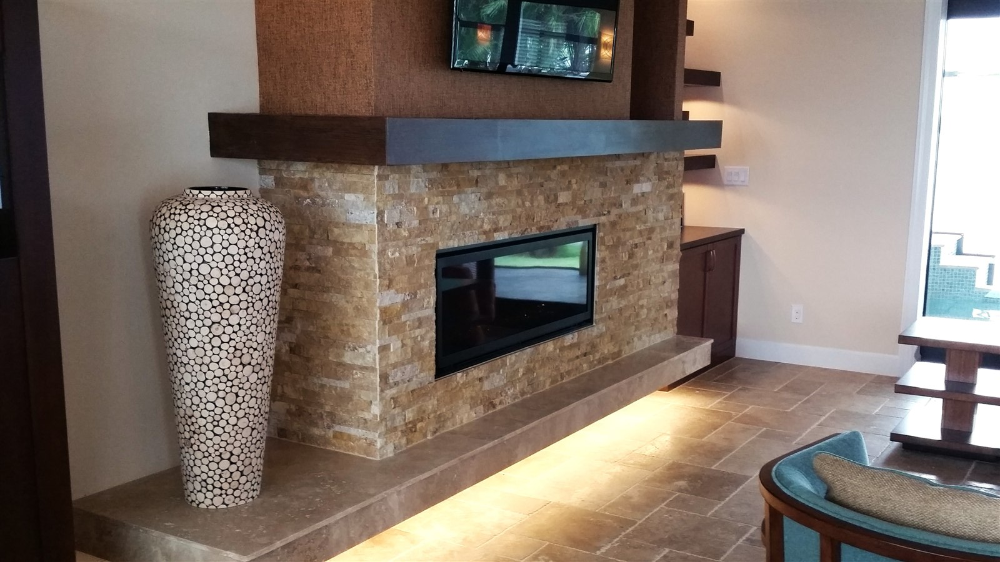

Floor Tile Installation in Hattiesburg, MS
From a single room to whole-home flooring, we level subfloors, square up layouts, and set tile flooring that stays flat and tight for years.
Floor Tile That Stays Flat and Tight
Most floor tile problems trace back to subfloor prep, not the tile itself — lippage between tiles, hollow-sounding spots, or cracked grout usually mean the substrate wasn't leveled or the wrong mortar was used for the tile size. We start with a flat, properly prepped subfloor before setting a single tile, which is the difference between a floor that lasts decades and one that needs redoing in a few years.
South Mississippi homes see their share of humidity and seasonal foundation movement, so proper expansion joints and underlayment choices matter more here than in a drier climate. We account for that during planning, not as an afterthought.
What We Install
- Subfloor leveling and prep before tile is set
- Large-format porcelain, ceramic, and natural stone flooring
- Wood-look and stone-look plank tile
- Removal and disposal of old flooring
- Layout planning to minimize small cut pieces at room edges
- Transition strips between rooms and flooring types
Choosing the Right Floor Tile
Porcelain is the most common pick for whole-home flooring — dense, low-absorption, and durable enough for kitchens, entryways, and high-traffic hallways alike. Ceramic costs less and works well in lower-traffic bedrooms and living areas. Natural stone (travertine, slate, marble) brings texture and a premium look but needs sealing specific to the stone type, and wood-look plank tile gives you the look of hardwood with the water resistance tile is known for — a popular choice for open-concept living areas that flow into kitchens or bathrooms. We'll walk you through samples so you can compare finishes in your own home's lighting before committing.

Floor Tile FAQ
Can you tile over my existing floor?
It depends on the condition and flatness of the existing floor and how much added height your doorways and transitions can accommodate. Removing old flooring usually gives the most reliable long-term result.
What's the difference between porcelain and ceramic tile?
Porcelain is denser and less porous, making it more durable and better suited to high-traffic or damp areas. Ceramic is typically less expensive and works well in lower-traffic rooms.
How long does a whole-home floor tile installation take?
Timeline depends heavily on square footage and whether furniture needs to be moved, but a mid-size home typically takes anywhere from a few days to two weeks. We'll give you a specific estimate after seeing the space.
Other Tile Services
Ready for New Floor Tile?
Get a fast, free quote from the crew doing the work.